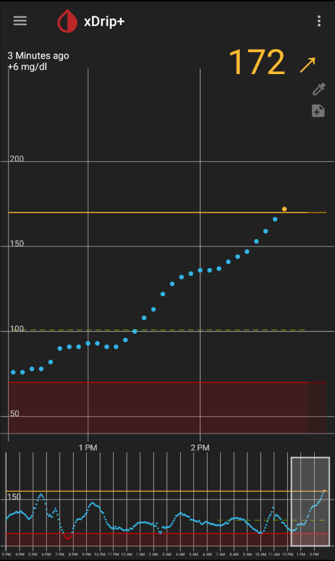
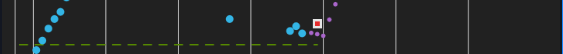
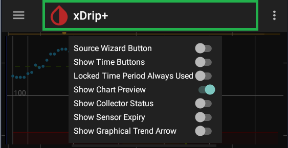
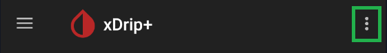

Main view
Meet the user interface⌁
Welcome to xDrip+!

If you've just setup xDrip+ you want to start with basic customizations:
- Setup the unit you want to display your blood glucose with
- Add alarms
- If you're connecting xDrip+ to a sensor, share data to another phone with xDrip+
- Display xDrip+ on the phone when screen is locked
- Add a widget to your phone home screen
- Add a smartwatch
- Share data with your endocrinologist using Tidepool, if you have a Tidepool account, just setup xDrip+
- Upload your data to Nightscout (recommended)
Basic indications⌁
You will see these default indications when xDrip+ receives data.
- How long ago was the reading received and what's the BG difference with the previous value received.
- What's the last measured BG value.
- What's the trend in respect with the previous measurement.
Trend arrow⌁
Note
The arrow gives the trend difference with the previous measurement, other CGM applications use an algorithm to give this indication and the result might not match.
In case of missing readings, the arrow might indicate fast rise or drop, always correlate with the indication in 1.
You can customize the information shown in 1 with Graph Settings.
You can customize the trend arrow aspect but not behavior (i.e. it will always use the difference with the previous reading).
This is how the classic trend arrow will appear, it takes into account the difference between previous and current BG readings.
| BG difference (previous and current) | |
|---|---|
| Changed at most +/- 5mg/dl (0.28 mmol/l) |  |
| Changed more than above and less than +/- 9mg/dl (0.5 mmol/l) |  |
| Changed more than above and less than +/- 19mg/dl (1.06 mmol/l) |  |
| Changed more than above |
Treatments⌁
You can log treatments with the syringe icon.

Add one or more elements to your treatment.
Blood test⌁
It will display in the unit selected in xDrip+.

Grams of carbs⌁

Units of insulin⌁
Note
If you enabled multiple insulin types, you should also select the insulin type for this treatment.

Time⌁
And eventually the time of the treatment (if not now) expressed in 24 hours format, with or without a separator.

Treatments are valid when the green check mark appears in the upper right corner. Touch it to confirm the entries.
A summary is displayed. Touch the green + icon to confirm or red x icon to discard.
Once done, new symbols will appear on your graph.
Units and carbs show like this:

And blood tests like this (note the symbol is square unlike calibrations that are round):

Edit and delete⌁
When visible, you can delete treatments like this:
- Touch the treatment, look at the bottom of the screen: touch Add Note or Blood Test.
- You can enter a note or touch Delete to delete the entry. This applies to blood tests, carbs and insulin.
Note that if you touch a blood test and edit it you can also convert it to a calibration using Calibrate. This is possible if you didn't select Never use them in Advanced Calibrations.

Spoken treatments⌁
You can use the microphone icon to verbally enter treatments or advanced commands.
A long touch on the microphone icon will allow you to write advanced commands.
Treatment notes⌁
Independently of treatments you can enter notes.

Enter the comment you want (like slow acting insulin units), or use the microphone icon to speak the note.
They will be added to the graph like this:

By touching them you can edit or delete them.
Undo and Redo⌁
- Undo will step backwards through treatments simulations, calibrations and notes. After 30 minutes it will hide again.
- Redo can step forwards through treatments simulations, calibrations and notes. After 30 minutes it will hide again.
Main menu⌁
Also called hamburger or drawer menu, this is the main menu in which you'll be able to find or add the most common actions you need and also all settings and customizations.

Blood drop menu⌁
With a long touch on the central area between main and three dots menu you can open another menu for customizing the user interface.

Source Wizard Button⌁
Shows the button driving you through the data source selection as described here.

Show Time Buttons⌁
Adds a row of four presets for the main graph time range: 24, 12, 6 and 3 hours.
If you long press a time button you can lock the view to that time period.
Locked time period always used⌁
Sets the last modified display time period as default.
Show Chart Preview⌁
Enables or disables the 24 hours small chart in the lower screen area.

Show Collector Status⌁
Shows information messages regarding the collector status below the main graph.
Show Sensor Expiry⌁
Displays the remaining time before sensor expiry below the main graph.
Show Graphical Trend Arrow⌁
Adds an option allowing you to select other arrow styles.
Use the wrench and drop down menu to select them.
Color arrows include a hue cursor to change color.
Graphical trend arrows angle depends on the reading difference with the previous value (5 minutes) and not only flat/45/90 degree like the classic arrows.

Three dots menu⌁
This menu contains some shortcuts to settings and other unique functions.


Widget⌁
If your phone supports widgets, long touch an empty area on your home screen and select widgets.
Browse the apps until you find xDrip+.

Keep your finger on the widget and drag it to the position you want it to be displayed.

You can resize it using the blue dots.
And make it the size you like. Then you can customize colors and contents aspect in display settings.

Screensaver⌁
If your phone supports this feature you can enable xDrip+ as screensaver in Android Settings.
When you put your phone in charge it will display a small graph and the BG value.